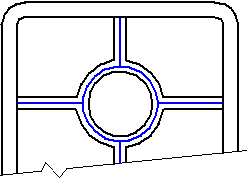
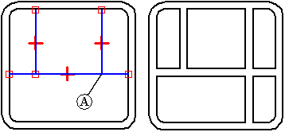
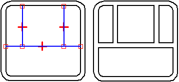
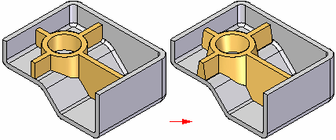

Web Network command
Use the Web Network command to construct a series of webs. All webs constructed in the same operation become part of a single web network feature.
You can construct a web network as the base feature of a part using sketch geometry.

The web network is constructed perpendicular to the sketch plane. The web material thickness is always applied symmetrically on both sides of the web sketch. This differs from the Rib command, which allows you to specify a material side for a rib.

When constructing complex web networks using the Extend Profile option, the results can be affected by connect relationships on profile element vertices. For example, when no connect relationship is applied between the vertical profile line (A) and the horizontal line, the corresponding web is extended to the edge of the part.

If a connect relationship is applied to the vertex, the web does not extend.

You can also specify that draft is added to the faces on a web network feature that are perpendicular to the profile plane.

Controlling the web network definition
In the ordered environment, the sketch used to create the web network controls the feature. Use the Edit Profile command to add dimensions and to add or remove elements.
In the synchronous environment, the initial sketch defines the web network. The sketch is consumed during feature creation and is not associated with the web network feature. After the feature is created, you can add dimensions to control the web network. You can dimension to the midpoint of a rib. On the command bar, you must turn on the midpoint keypoint option to locate the rib midpoint to dimension to it. To delete a rib section, you select both faces on either side of the rib to remove and press Delete. To add a new section to the web network, you must create a new rib.